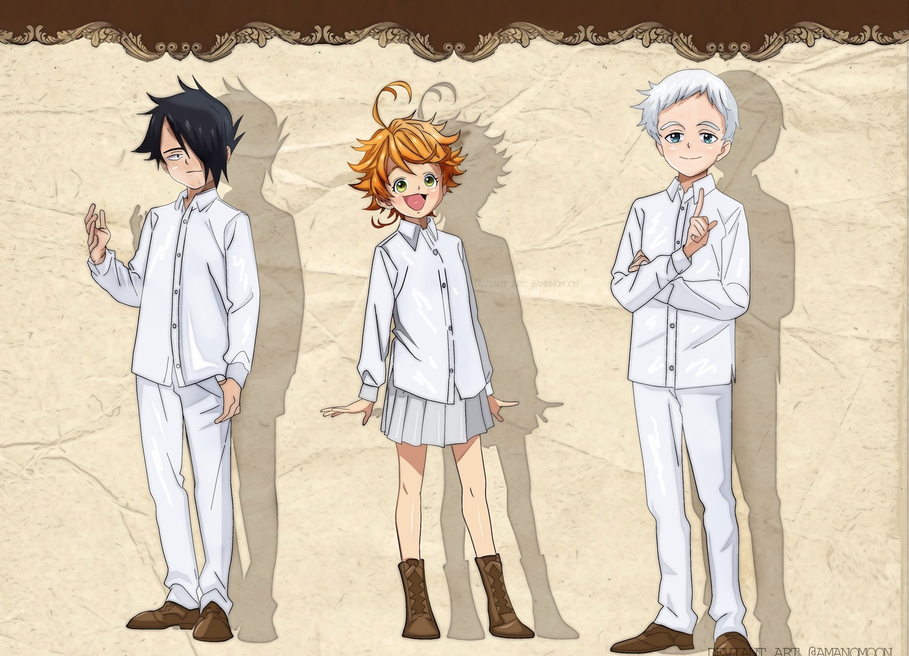
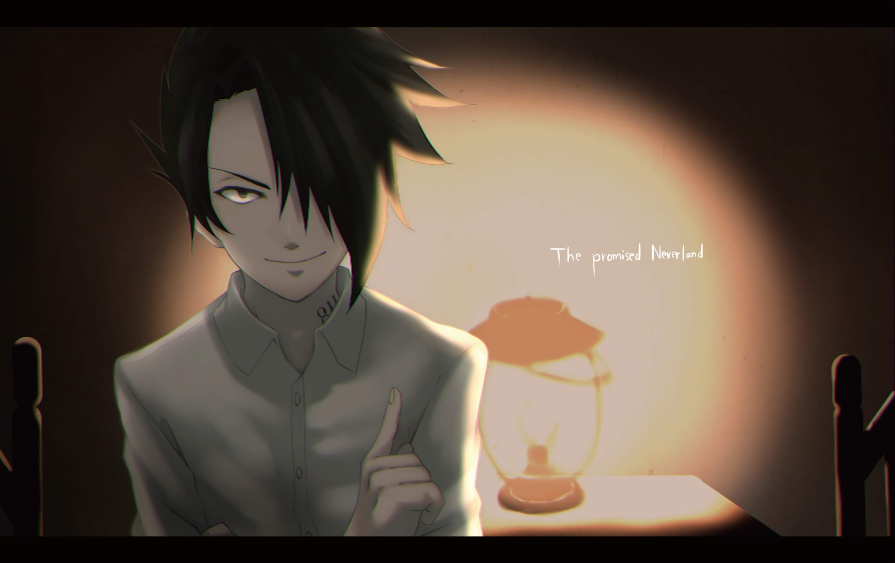

The Promised Neverland
Présentation
Auteur
Synopsis
Personnages
Impact
Manga
Animé
Film d'animation
Différentes versions
Manga/Light Novels
Serie/Film
Revue
Découverte
de l'espion
Tentative
avortée
Revue de la découverte de l'espion
Découvrir la revue
Depuis la création de leur plan d’évasion, Emma, Norman et Ray tentent de le mettre à exécution en mettant en place tous les préparatifs pour assurer leurs chances de survie.

Légende: Image de Ray, Emma et Norman
Cependant, Isabella a mystérieusement découvert leur plan et sait qui en est à l’origine. Elle leur a fait comprendre en mettant en place des traceurs qui permettraient à Isabella de détecter le moindre mouvement de la part des enfants. Nos 3 personnages principaux sont donc surpris par les mesures qu’Isabella a prises.
Norman affirme sans l’ombre d’un doute qu’il y a parmis les enfants de Grace Field, une taupe qui a comme mission de rapporter tous les plans mis en place par le trio. Norman se décide donc a employé plus moyens pour repérer la taupe.
Entre temps, les protagonistes commencent d’ores et déjà à former les enfants pour la fuite futur par le biais d’un jeu du chasseur : 1 enfant plus âgé que les autres prend un groupe d’enfants avec lui et doit mettre en place une stratégie pour trouver et attraper les groupes restants. Cela renforce plusieurs aptitudes physiques.

Légende: Image de Ray
Norman décida durant ce temps de construire des cordes grâce à des draps et de les cacher à différent endroit de la maison tout en diffusant l’information de ses cordes aux deux autres. Ils se décident également à révéler la vérité à Don et Gilda au sujet de ce qu’il se à Grace Field. Norman en profita donc pour les tester en leur donnant à chacun une position de corde différente afin de savoir si Isabella est au courant des positions et est-ce qu'elle compte les dérober.
Mais ce qu'il n'a pas dit à Emma et Ray, c'est qu'il avait demandé à Don que la corde se trouvait au réfectoire et à Guilda qu'elle était à la bibliothèque. Et la corde qui a été dérobé est celle en-dessous du lit de Norman, lieu qu'il n'avait révélé qu'à Ray.
C’est à ce moment qu’il réussit à piéger la taupe qui était en réalité et depuis le départ Ray.